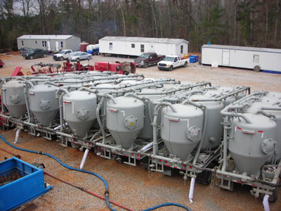

Spooner Petroleum Company was founded by Harry Spooner in 1976 as an independent oil and gas exploration and production company located in Jackson, Mississippi. The company operated as a Limited Partnership with Chesley Pruet, Dudley Hughes, Dan Hughes as Limited Partners and Harry Spooner as General Partner. In 1981, Michal Spooner joined the company as Operations Manager and subsequently became President in 1990. In 1982, the Limited Partners interest in the company was purchased and in 1985, Spooner Petroleum Company reorganized as a Subchapter S Corporation.
Since inception the company has been very active in North Louisiana, Mississippi and Alabama with limited operations in South Louisiana. A very strong reputation for knowledge and integrity along with an extensive data base has been established in these regions.
Spooner Petroleum Company's exploration efforts have resulted in new field or new pool discoveries in Alabama at Stave Creek Field, Hickory Branch Field, East Lambeth Church Field, Sizemore Creek Field, Catawba Springs Field, Hall Creek Field, Foshee Field, West Foshee Field, Pollard Field, Jones Mill Field and South Vernon Field. Additional fields have been developed in Mississippi at Satartia Field, Waldrup Field, Monticello Field, Grange Field, East Flora Field and South Magee Field. Louisiana fields include South Kraemer Field, East Sardis Church Field and Riverton CBM Field. Spooner continues its exploration efforts today.
From 1998 through 2000 Spooner Petroleum Company served as a Contract Operator for eleven deep, high pressure, sour gas wells located in Wayne County, Mississippi. The Rebel-U.S.A. 19-10 was drilled to 19,600' with a final mud weight of 19.1 ppg. Our clients for these wells were Twister Gas Services, Rebel Drilling Company, Emerald Savannah Corporation, Bean Resources, Inc. and Dominion Exploration and Production Company. The experience gained from drilling, completing, and producing these wells resulted in Spooner Petroleum Company becoming the leading expert in the area for this type of drilling and production.
In mid-2006, Spooner Petroleum Company became Contract Operator for Mississippi Hub, LLC and worked to develop a salt dome cavern gas storage project in Simpson County, Mississippi. Spooner's responsibilities included the well design, development of the drilling plans, and drilling and completion supervision for one salt dome storage well and four high volume saltwater disposal wells in Simpson County, Mississippi.
In addition to operating its own properties, Spooner Petroleum currently contract operates drilling and producing wells for numerous other producers in Mississippi and Alabama.